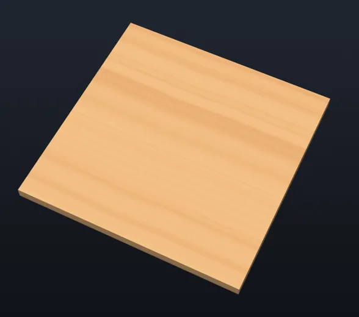

Burin
BurinDesign it,
then carve it.
Burin draws your parts, prepares the toolpaths and writes the file your CNC machine reads. Free, with no account, and nothing leaves your computer.

Burin has cut only a few real jobs so far. Check every file in a simulator, then run it in the air, with the bit well above the material, before you cut.
Three steps
From the idea to the part, without changing programs.
Draw the part
Shapes, text, dimensions, or open an SVG, a DXF or a .crv3d project.
Choose how to cut
Profile, pocket, V-carving, 3D. The preview shows the wood before the bit touches it.
Save the G-code
For GRBL, Mach3, LinuxCNC, PlanetCNC or your own post processors.

Made for the workshop
One program, from the sketch to the machine, that stays with you.
Free and open
Under the GNU GPL: no account, no subscription, no advertising. The code is open to all.
Offline, and discreet
Everything is worked out on your computer. Nothing is sent, even from the browser version. Looking for a new version at start is up to you.
Your earlier projects
Opens .crv3d projects with their shapes, toolpaths, guides and notes, as well as SVG, DXF, STL and pictures.
What it opens
What it works out
For your machine
What it does
Everything between the drawing and the machine file.
Draw
Curves, single-line text for engraving, dimensions and constraints.
Model in 3D
Reliefs from a picture or an STL, sculpting, sweeps, weaving.
Machine
Profile, pocket, drilling, V-carving, 3D, adaptive clearing, with ramps, leads and tabs.
Nest
Parts inside parts, turned to fit, over several sheets.
Check
3D simulation, machining time, each file read back as the machine will read it.
Exchange
Opens .crv3d, SVG, DXF and STL; writes for your controllers.
In pictures
Click a picture to see it full size.


Download
Version {{VERSION}} · one file, nothing to install.
Windows
Burin-{{VERSION}}-windows-x86_64.exeDouble-click. If Windows warns that the program isn't signed: “More info”, then “Run anyway”.
Download →Linux
Burin-{{VERSION}}-x86_64.AppImageAllow it to run (right click, Properties, “Allow executing”), then double-click. Help › Add to Applications Menu puts it in your menu.
Download →Browser
burin.cc/appThe same program in the page. Nothing leaves your computer; saving downloads the file.
Open →What's new
- Toolpaths that follow the original jobs more closely
Pockets clear what their rings leave along its middle; leads into small holes are shortened by tenths; V-carving with an end mill goes back where the big bit can't enter.
- Projects that tell what's out of date
A saved toolpath made from an older drawing shows in red until it is recalculated, and recalculating names any toolpath that fails.
- Every kind of bit read from your projects
Radiused end mills, engraving bits and drills come in as they are, and a V-carve only takes the bits it can carve with.
- Selection as you'd expect
The first click only selects a shape, so nothing moves by mistake; a pasted copy is ready to move.
Frequent questions
Is it really free?
Yes. Burin is free software under the GNU GPL: you can use it, share it and change it, with no account, no subscription and no advertising.
Which machines does it work with?
It writes G-code for GRBL, Mach3, LinuxCNC and PlanetCNC, and for others through post processor files (.pp). It doesn't drive the machine: you open the file in its control program.
Can I open my .crv3d projects?
Yes, with their shapes, toolpaths, guides, grid and notes. Some 3D parts of a project aren't read yet. It also opens SVG, DXF, STL and pictures.
Is it safe to use on my machine?
Burin has cut only a few real jobs so far, so treat every file as untested: check it in a simulator, run it in the air with the bit well above the material, and keep a hand near the emergency stop.
Does it need the internet?
No. The Windows and Linux programs work fully offline (only looking for a new version, if you allow it, uses the internet); the browser version loads once, then everything is worked out in the page.
How do I report a problem?
In Burin, Help › Send Feedback opens a draft you read before sending; your work and file names are never in it. You can also open an issue on GitHub.